PaperWeekly 第六期
引
本期paperweekly的主题是Question Answering Models，解决这一类问题可以很好地展现AI理解人类自然语言的能力，通过解决此类dataset可以给AI理解人类语言很好的insights。问题的定义大致是，给定较长一段话的context和一个较短的问题，以及一些candidate answers，训练一些可以准确预测正确答案的模型。
此问题也存在一些变种，例如context可以是非常大块的knowledge base，可以不提供candidate answers而是在所有的vocabulary中搜索答案，或者是在context中提取答案。
基于(Recurrent) Neural Network的一些模型在这一类问题上给出了state of the art models，本期paperweekly就带领大家欣赏这一领域有趣的工作。
Attention-over-Attention Neural Networks for Reading Comprehension
作者
Yiming Cui, Zhipeng Chen, Si Wei, Shijin Wang, Ting Liu and Guoping Hu
单位
iFLYTEK Research, China
Research Center for Social Computing and Information Retrieval, Harbin Institute of Technology, China
关键词
Question Answering, Attentive Readers
来源
arXiv, 201608
问题
本文优化了attention机制，同时apply question-to-document and document-to-question attention，提升了已有模型在Cloze-Style Question Answering Task上的准确率。
模型
本文解决的是Cloze-style question answering的问题，给定一个Document和一个Query，以及一个list的candidate answers，模型需要给出一个正确答案。
已有的模型大都通过比较每一个Query + candidate answer和context document的相似性来找出正确答案，这种相似性measure大都通过把query 投射到context document每个单词及所在context的相似性来获得。本文的不同之处在于模型还计算了context投射到每个query单词的相似度，进一步丰富了context和query相似度的计算。
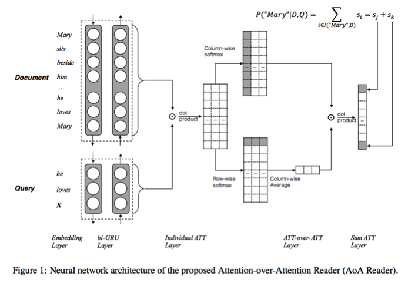
首先，document和query都会被model成biGRU。
然后使用document biGRU和query biGRU的每一个position做inner product计算，可以得到一个similarity matrix。
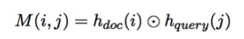
对这个matrix做一个column-wise softmax，可以得到每个query单词在每个document单词上的similarity。
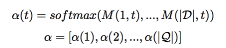
similarly，对这个matrix做一个row-wise softmax，可以得到每个document单词在每个query单词上的similarity。
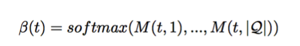
取个平均就得到了每个query单词在整个context document上的similarity。
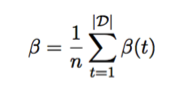
然后把alpha和beta做个inner product就得到了每个context document word的probability。
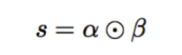
每个candidate answer的probability就是它出现在上述s中的probability之和。
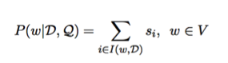
Loss Function可以定义为正确答案的log probability之和。
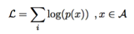
资源
相关工作
利用attentive readers解决question answering问题最早出自deep mind: teaching machines to read and comprehend。后来又有Bhuwan Dhingra: Gated-Attention Readers for Text Comprehension和Danqi Chen: A Thorough Examination of the CNN/Daily Mail Reading Comprehension Task，以及其他相关工作，在此不一一赘述。
简评
本文很好地完善了attentive reader的工作，同时考虑了query to document and document to query attentions，在几个data set上都取得了state of the art效果，思路非常清晰，在question answering问题上很有参考价值。
MACHINE COMPREHENSION USING MATCH-LSTM AND ANSWER POINTER
作者
Shuohang Wang, Jing Jiang
单位
Singapore Management University
关键词
Machine comprehension, Match-LSTM, Pointer Net
来源
arXiv，201608
问题
提出一种结合match-LSTM和Pointer Net的端到端神经网络结构，来解决SQuAD数据集这类没有候选项且答案可能是多个词的machine comprehension问题。
模型
本文提出的模型结合了match-LSTM(mLSTM)和Pointer Net(Ptr-Net)两种网络结构。
1、match-LSTM
mLSTM是由Wang和Jiang提出的一种解决文本蕴含识别（RTE）问题的一种神经网络结构。模型结构见下图，该模型首先将premise和hypothesis两句话分别输入到两个LSTM中，用对应LSTM的隐层输出作为premise和hypothesis中每个位置对应上下文信息的一种表示（分别对应图中的Hs和Ht）。对于hypothesis中的某个词的表示ht_i，与premise中的每个词的表示Hs计算得到一个权重向量，然后再对premise中的词表示进行加权求和，得到hti对应的上下文向量a_i（attention过程）。最后把hypothesis中该词的表示ht_i和其对应的context向量a_i拼接在一起，输入到一个新的LSTM中。该模型将两个句子的文本蕴含任务拆分成词和短语级别的蕴含识别，因此可以更好地识别词之间的匹配关系。
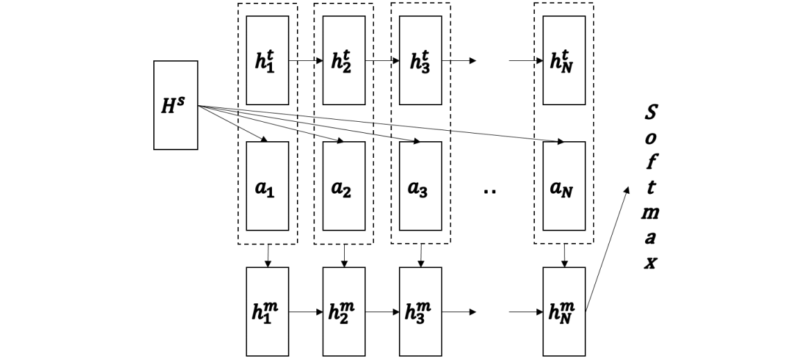
2、 Pointer networks
该模型与基于attention的生成模型类似。区别之处在于，pointer networks生成的结果都在输入序列中，因此pointer networks可以直接将attention得到的align向量中的每个权重直接作为预测下一个词对应的概率值。
3、 Sequence Model & Boundary Model
本文提出的模型结构见下图，具体到本文的神经网络结构，可以简单分为下面两部分：
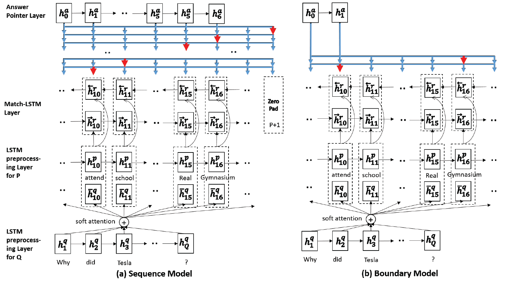
（1）Match-LSTM层：该部分将machine comprehension任务中的question作为premise，而passage作为hypothesis。直接套用上述的mLSTM模型得到关于passage每个位置的一种表示。为了将前后方向的上下文信息全部编码进来，还用相同的方法得到一个反向mLSTM表示，将两个正反方向的表示拼接在一起作为最终passage的表示。
（2）生成答案序列部分，论文中提出了两种生成方法：
Sequence方法与Pointer Net相同，即根据每一个时刻attention的align向量生成一个词位置，直到生成终止符为止。
Boundary方法则是利用SQuAD数据集的答案均是出现在passage中连续的序列这一特点，该方法仅生成首尾两个位置，依据起始位置和终止位置来截取passage的一部分作为最终的答案。
本文在SQuAD数据集上进行实验，两种方法实验结果较之传统LR方法均有大幅度提升。其中Boundary方法比Sequence方法效果更好。
资源
相关工作
数据集相关论文
SQuAD: 100,000+ Questions for Machine Comprehension of Text
模型相关论文
Learning Natural Language Inference with LSTM
Pointer networks
简评
本篇论文提出的模型是第一个在SQuAD语料上应用端到端神经网络的模型，该模型将Match-LSTM和Pointer Networks结合在一起，利用了文本之间的蕴含关系更好地预测答案。
本文提出了两种方法来生成答案，其中Boundary方法巧妙地利用SQuAD数据集的答案均是文本中出现过的连续序列这一特点，只生成答案的起始和终止位置，有效地提升了模型的效果。
Dataset and Neural Recurrent Sequence Labeling Model for Open-Domain Factoid Question Answering
作者
Peng Li, Wei Li, Zhengyan He, Xuguang Wang, Ying Cao, Jie Zhou, Wei Xu
单位
Baidu IDL
关键词
Question Answering, Sequence Labeling, CRF
来源
arXiv, 201609
问题
作者给出了一个新的中文的QA数据集, 并且提出了一个非常有意思的baseline model.
模型
1、WebQA Dataset
作者来自百度IDL, 他们利用百度知道和一些其他的资源, 构建了这个中文的QA数据集. 这个数据集里所有的问题都是factoid类型的问题, 并且问题的答案都只包含一个entity (但是一个entity可能会包含多个单词). 对于每个问题, 数据集提供了若干个’evidence’, 这些evidence是利用搜索引擎在网络中检索的.
2、Recurrent Sequence Labeling Model
作者把QA类型的问题看做sequence labeling问题, 给出的模型大概分三部分:
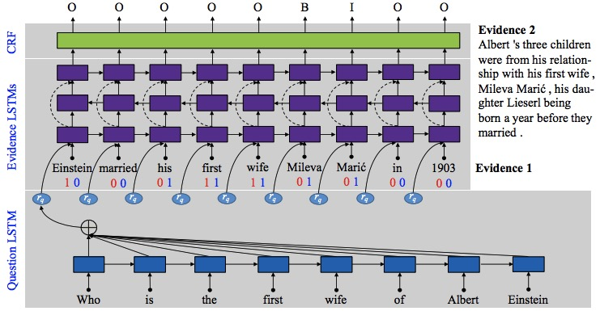
（1）Question LSTM
这部分很简单, 就是普通的单向LSTM, 对整个Question sequence进行encoding, 之后计算self-attention, 并用attention对question encoding求加权平均作为问题的representation.
（2）Evidence LSTMs
这部分比较有意思, 首先, 作者从数据中提取出两种feature: 每个词是否在question和evidence中共同出现, 以及每个词是否同时在多个evidence中出现. 之后, 模型用一个三层的单向LSTM对evidence/quesiton/feature进行编码.
- 第一层: 将evidence/question representation/feature进行连接, 放进一个正向LSTM.
- 第二层: 将第一层的结果放入一个反向LSTM.
- 第三层: 将第一层和第二层的结果进行连接, 放进一个正向LSTM.
（3）CRF
经过evidence LSTMs, question和evidence的representation已经揉在一起, 所以并不需要其他QA模型(主要是Attention Sum Reader)广泛用的, 用question representation和story representation进行dot product, 求cosine similarity. 这时候只需要对evidence representation的每一个time step进行分类就可以了, 这也是为什么作者将数据标注成IOB tagging的格式, 我们可以直接用一个CRF层对数据进行预测. 在一些实验中, 作者将答案之前的词用O1, 答案之后的词用O2进行标注, 这又给了模型关于非答案词的位置信息(正确答案是在这个词的前面还是后面).
资源
相关工作
- 关于CRF进行序列标注的问题, 可以参考这篇文章.
Zhiheng Huang, Wei Xu, and Kai Yu. 2015. Bidirectional LSTM-CRF models for sequence tagging. arXiv:1508.01991v1. - 关于multi-word答案选择在SQuAD dataset上的模型, 可以参考这篇.
Shuohang Wang, Jing Jiang. 2016. Machine Comprehension Using Match_LSTM and Answer Pointer. arXiv: 1608.07905v1.
简评
首先对所有release数据集的人表示感谢.
关于dataset部分, 百度利用了自己庞大的资源收集数据. 第一, 百度知道里的问题都是人类问的问题, 这一点相比于今年前半年比较流行的CNN/CBT等等cloze style的问题, 要强很多. 第二, 数据集中包含了很多由多个词组成的答案, 这也使数据集的难度大于CNN/CBT这种单个词作为答案的数据. 第三, 对于每个问题, 并没有给出备选答案, 这使得对于答案的搜索空间变大(可以把整个evidence看做是备选答案). 第四, 对于每一个问题, dataset中可能有多个supporting evidence, 这也迎合了最近multi-supporting story的趋势, 因为对于有些问题, 答案并不只在某一个单一的文章中(对于百度来说, 如果搜索一个问题, 那么答案并不一定在单一的搜索结果网页中), 那么一个好的model需要在有限的时间内对尽可能多的搜索结果进行检索.
关于model部分, 本文尝试将QA问题看做是序列标注问题, 某种意义上解决了multiword answer的难点. 熟悉前半年QA paper的人都会对Attention Sum Reader以及延伸出来的诸多模型比较熟悉, 由于用了类似Pointer Network的机制, 一般的模型只能从文中选择story和question的cosine similarity最高的词作为答案, 这使得multiple word answer很难处理, 尤其是当multiple answer word不连续的时候, 更难处理. 而CRF是大家都熟知的简单高效的序列标注工具, 把它做成可训练的, 并且放在end to end模型中, 看起来是非常实用的. 在Evidence LSTM的部分, 加入的两个feature据作者说非常有帮助, 看起来在deep learning 模型中加入一些精心设计的feature, 或者IR的要素, 有可能能够对模型的performance给予一定的提升. 在entropy的角度, 虽然不一定是entropy reduction, 因为这些信息其实本来已经包含在question/evidence中了, 但是有可能因为你提供给模型这些信息, 它就可以把更多精力用在一些其他的特征上?
另外值得一提的是, 最近Singapore Management University的Wang and Jiang也有所突破, 在SQuAD dataset(也是multiple word answer)上一度取得了state of the art的结果, 他们用的mLSTM模型也十分有趣.
总结
这一类model都大量使用了Recurrent Neural Network(LSTM或者GRU)对text进行encoding，得到一个sequence的hidden state vector。然后通过inner product或者bilinear term比较不同位置hidden state vector之间的similarity来计算它们是正确答案的可能性。可见Recurrent Neural Network以及对于Similarity的定义依旧是解决此类问题的关键所在，更好地改良这一类模型也是提升准确率的主流方法。笔者认为，similarity的计算给了模型从原文中搜索答案的能力，然而模型非常缺乏的是推理和思考的能力（其实也有相关工作Towards Neural Network-based Reasoning），如果模型能够配备逻辑思考能力，那么解决问题的能力会大大增强。非常期待有新的思路能够出现在这一领域中，令AI能够更好地理解人类语言。
广告时间
PaperWeekly是一个分享知识和交流学问的民间组织，关注的领域是NLP的各个方向。如果你也经常读paper，也喜欢分享知识，也喜欢和大家一起讨论和学习的话，请速速来加入我们吧。
微信公众号：PaperWeekly
微博账号：PaperWeekly（http://weibo.com/u/2678093863 ）
知乎专栏：PaperWeekly（https://zhuanlan.zhihu.com/paperweekly ）
微信交流群：微信+ zhangjun168305（请备注：加群 or 加入paperweekly）